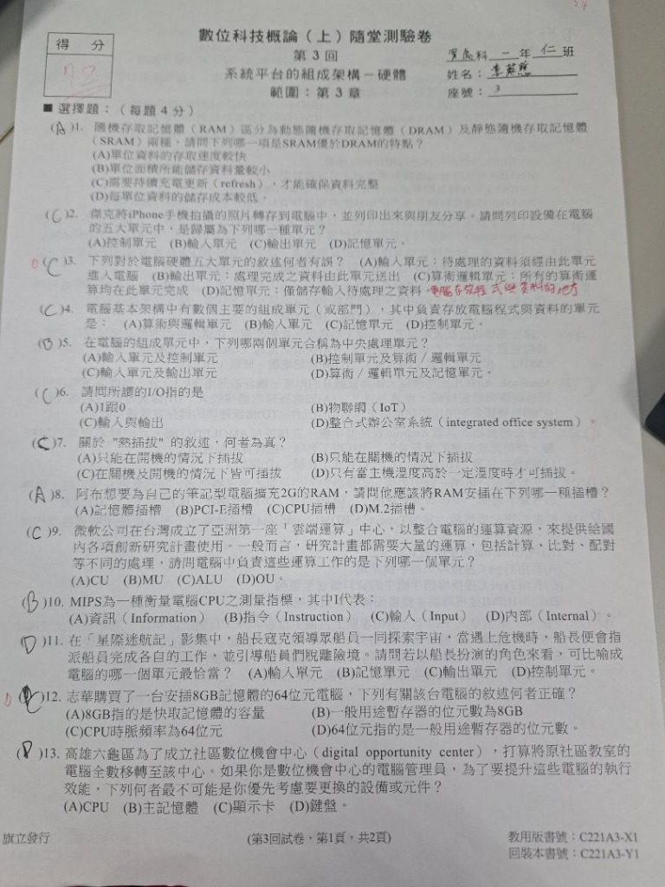
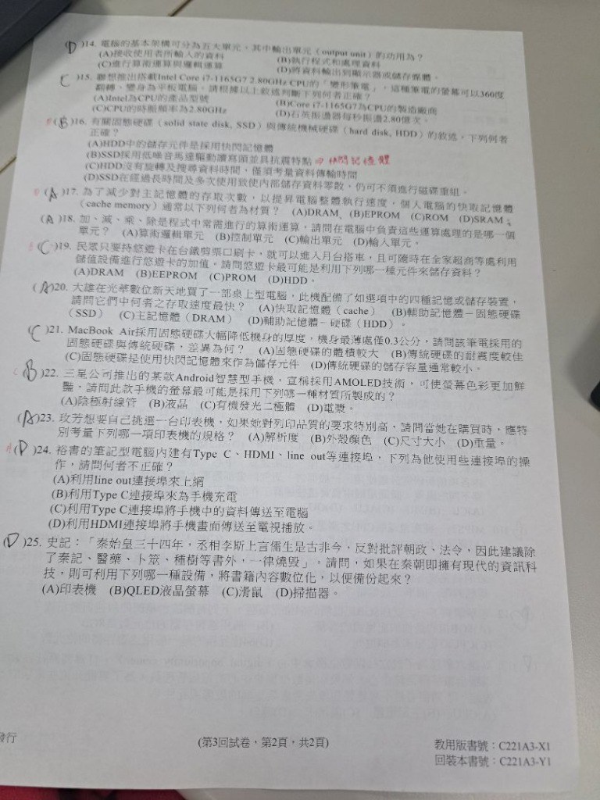

🖼️ 原始考卷高解析度手寫真跡全覽
點擊任一頁次即可放大檢視！本卷保留學生原始作答、得分 72 分手寫標記、以及紅筆訂正註記。
• 第 12 題：原填 C，紅筆更正為 D，標記 64 位元指的是一般用途暫存器。

• 第 24 題：紅筆標記 (A) line out 是音源輸出不能上網。
核心考點一：電腦硬體五大單元 (馮·紐曼架構)
本卷對應試題：第 2、3、4、5、6、9、11、14、18 題
電腦的心臟與大腦，由 控制單元 (CU) 與 算術邏輯單元 (ALU) 合稱（含內部暫存器）。
- CU (控制單元)：發號施令、解碼指令、指揮協調各部件（如星際迷航艦長）。
- ALU (算術邏輯單元)：負責加減乘除運算、大小比對、邏輯判斷 (AND/OR/NOT)。
負責存放「程式指令」與「資料」（含待處理資料、中間過程及輸出結果）。
- 主記憶體 (RAM)：CPU可直接存取，掉電資料消失（揮發性）。
- 常考陷阱：記憶單元不只是放「輸入的待處理資料」，運算指令與輸出結果也是它存！
合稱為 I/O (Input / Output)，是人類與電腦溝通的橋樑。
- 輸入單元 (Input)：鍵盤、滑鼠、掃描器 (紙本書數位化)、麥克風、鏡頭。
- 輸出單元 (Output)：螢幕、印表機 (相片列印輸出)、喇叭、投影機。
💡 家教名師解題口訣：五大單元協作流程
使用者從 [輸入單元] 送入資料 ➔ 存入 [記憶單元] ➔ [控制單元CU] 負責調度與發令 ➔ [算術邏輯單元ALU] 負責算術運算與比對 ➔ 計算結果存回 [記憶單元] ➔ 最後由 [輸出單元] 呈現給人看！
核心考點二：記憶體階層架構 (速度金字塔) 與介質大比拼
本卷對應試題：第 1、8、16、17、19、20、21 題
| 組成元件 | SRAM: 正反器 ｜ DRAM: 電容+電晶體 |
| 充電更新 | SRAM: 免充電 ｜ DRAM: 需持續充電 |
| 速度比較 | SRAM: 極快 ｜ DRAM: 較慢 |
| 常見應用 | SRAM: 快取(Cache) ｜ DRAM: 主記憶體(RAM) |
| 儲存介質 | SSD: 快閃晶片(Flash) ｜ HDD: 磁盤 |
| 機械零件 | SSD: 零馬達無磁頭 ｜ HDD: 有旋轉馬達 |
| 物理特性 | SSD: 抗震、極薄、靜音 ｜ HDD: 怕摔怕晃動 |
| 磁碟重組 | SSD: 【絕對不重組】 ｜ HDD: 定期重組 |
🚨 本卷四大易錯陷阱題深度診斷（考卷紅筆圈出重點）
這份隨堂測驗卷中，大部分同學常在「字詞定義太狹隘」、「單位換算看錯」、「把規格名稱混淆」這三大盲區失分。家教老師特別為你整理破題核心！
記憶單元只存「輸入的待處理資料」嗎？
原考題選項(D)：「記憶單元：僅儲存輸入待處理之資料」—— 這句話哪裡錯？
❌ 學生盲點：
看到「待處理資料」就直覺以為是記憶體的功用，忽略了致命的關鍵字「僅」！
✅ 名師解惑：
馮紐曼的「內儲程式」概念指出，記憶單元同時存放：(1) 執行的程式指令、(2) 待處理的原始資料、(3) 運算過程中的中繼數據、(4) 準備送往輸出的結果。絕不能說「僅」存輸入資料！
「64位元電腦」是時脈頻率還是記憶體容量？
原題目：「志華買了一台安插8GB記憶體的64位元電腦，下列何者正確？」
❌ 學生盲點：
考卷上很多同學選了 (C) CPU時脈頻率為64位元，把「時脈」跟「字組位元」搞混。
✅ 名師解惑：
• 時脈頻率的單位是 Hz / GHz（例如 3.2GHz），不是位元！
• 8GB 指的是主記憶體 (RAM) 的容量，不是快取容量！
• 64位元 是指 CPU 內部的 一般用途暫存器寬度 (Register size)，也是一次運算的字組大小 (Word size)。
SSD固態硬碟檔案零散時，要重組嗎？
原考題選項(D)：「SSD在經過長時間使用致使資料零散，仍可不須進行磁碟重組」
❌ 學生盲點：
很多同學誤以為 SSD 內部有「低噪音馬達驅動讀寫頭」，把機械硬碟的構造套在固態硬碟上！
✅ 名師解惑：
• SSD是快閃記憶體晶片，內部完全沒有馬達與讀寫頭，完全零機械動態！
• 既然沒有磁頭移動尋軌，資料放在哪裡讀取速度都一樣快，不需要磁碟重組！
• 硬要去重組只會反覆抹寫快閃記憶體晶片，平白折損壽命！
2.80GHz 代表每秒震盪幾次？
原考題選項(D)：「石英振盪器每秒振盪 2.80 億次」—— 為什麼這是錯的？
❌ 學生盲點：
直接把數值 2.80 配上「億次」，以為 1 GHz = 1 億次。
✅ 名師解惑：
請牢記 SI 單位換算公式：
• K (Kilo) = 10^3 = 一千
• M (Mega) = 10^6 = 一百萬
• G (Giga) = 10^9 = 十億 (1,000,000,000)
所以 2.80 GHz = 2.80 × 10^9 = 28 億次/秒，不是 2.8 億次！
虛擬家教 AI 小助教 ‧ 即時解惑專區
點擊下方學生最常問的經典觀念，一秒看懂生活化白話比喻！
🎮 互動測量儀：兩兩比較誰最快？
選取兩個儲存元件，系統直接告訴你誰的速度快、以及核心原因！